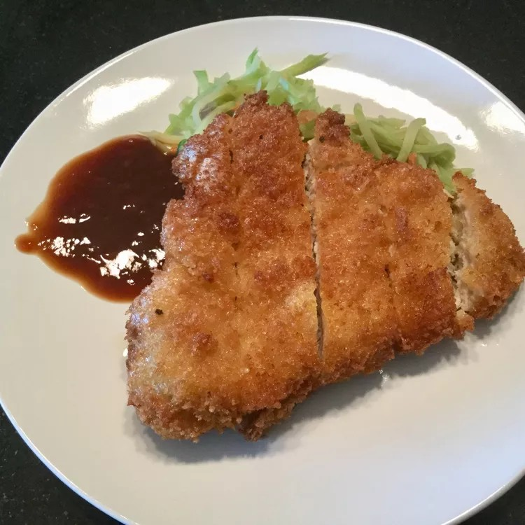

Home
Tonkatsu

Description
This Tonkatsu recipe uses thinly sliced boneless pork chops and panko,
which are Japanese bread crumbs that are really light and airy.
Ingredients
- 2 large eggs
- ¼ cup milk
- 1 teaspoon minced garlic
- Salt to taste
- ½ teaspoon pepper
- 8 thin cut boneless pork chops
- 1 cup panko bread crumbs
- 1 cup vegetable oil for frying
Steps
- Combine eggs, milk, garlic, salt, and pepper in a medium bowl until well mixed.
Place panko crumbs in a shallow bowl.
- Dip 1 pork chop in egg mixture, then press into panko crumbs to coat evenly.
Dip in egg mixture again and coat with another layer of panko crumbs. Lay coated
pork chop on a plate and repeat with remaining chops. Let coated chops sit for
about 10 minutes so the coating sets well.
- Heat oil in a large heavy skillet over medium-high heat.
- Fry pork chops in hot oil until golden brown, about 5 minutes per side.